Enemies
Encountered/(None) |
|
Diary Entry 30: Seekers' Stronghold Final Visit Destiny Awaits After talking to Ladha, the funeral ceremony began. Gash stated that the seekers' time had ended and they needed to leave, to rebuild somewhere else. I asked him what we would do about the Tower and Sestren. In their current state, the seekers could do nothing. It was up to me. I said I'd go back to the Tower. Gash told me it was a bad idea. Azel soon came into the room and said she would also go. She would guide the dragon and I to Sestren. Gash couldn't believe it, we still had a chance to free mankind from the will of the Ancients. He said if I survived my ordeal, to meet him in the valley, and to be on time. We did our good-bye hand shake, and that was that. Before leaving, I made sure to say good-bye to everyone. I first visited Jared, and told him what I intended to do. He wished me good luck, and said for me and Azel to come back in one piece. Next, I went and talked to Zadoc one last time, and he gave me another book called, Tower Report 2. It said that inside the Tower were five separate sections. To move between each section, I would have to pass through the outer areas, consisting of fifteen floors. It went on to describe each floor. It was a lot to take in. Moving down to the bottom floor, I ran into Paet. He had made his decision to join the seekers. He wanted his work to continue and believed he could help people, to make the world a better place. I told him I would return as soon as my mission to destroy the Tower and Sestren, was over. Also, on the bottom floor, inside the spare medical room on the shelf, I found three Gem Lens and two Speed Chips. The seekers had left so much behind. I thought I might as well take it. Before leaving the stronghold, I said good-bye to Gash, on the upper floor. He said to make sure not to forget about the rendezvous point. He had nothing more to say, and told me to hurry along with my important mission. My destiny awaited, I left for the Tower of Uru. 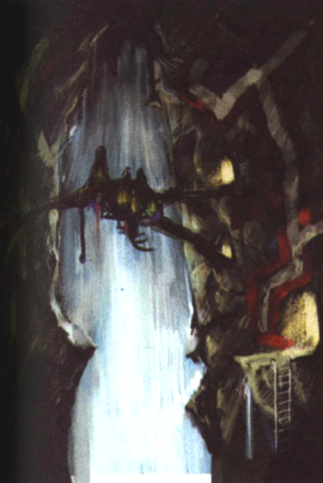 |
|
| Divine
Overview |
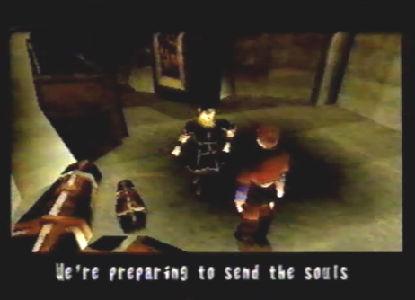 1. Talk to Ladha to initiate the funeral ceremony. |
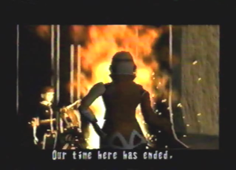 2. Gash will state that the seekers need to leave the stronghold, and rebuild somewhere else. |
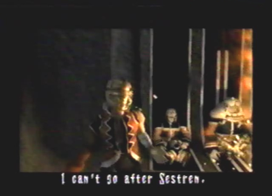 3. At their present state, the seekers don't stand a chance against Sestren. |
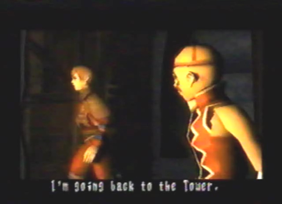 4. Edge tells everyone that he's going back to the Tower, to try and put an end to Sestren. |
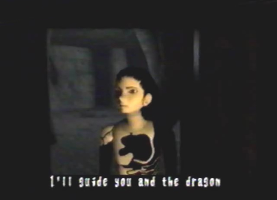 5. Azel agrees to go along with Edge, and guide him and his dragon to Sestren. |
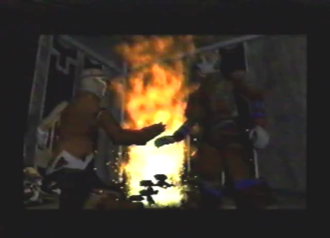 6. Gash tells Edge to meet him in the valley, if he survives his ordeal. |
|
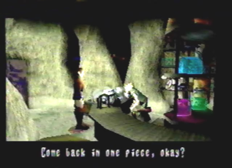 7. Say good-bye to Jared. He'll wish you good luck, and tell you and Azel to come back in one piece. Also, if you haven't, stock up on supplies. The Tower is a long and treacherous place. |
|
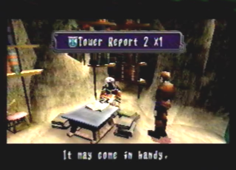 8. Talk to Zadoc one last time, and he'll give you Tower Report 2 X 1. |
|
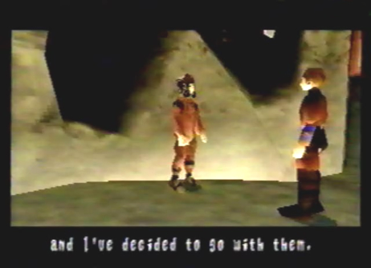 9. Paet can be found on the bottom floor awaiting the seekers departure. He's decided to join them, and wants to continue his work. |
|
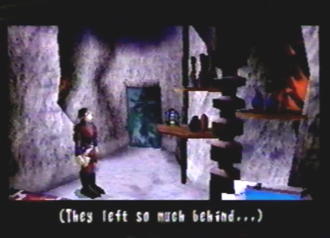 10. Also, on the bottom floor, you can find Gem Lens X 3 and Speed Chip X 2 on the shelf, in the spare medical room. |
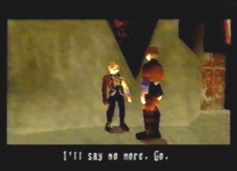 11. On the upper floor, Gash will tell you not to forget about the rendezvous point. He has nothing more to say, and tells you to carry on with your mission. |
|
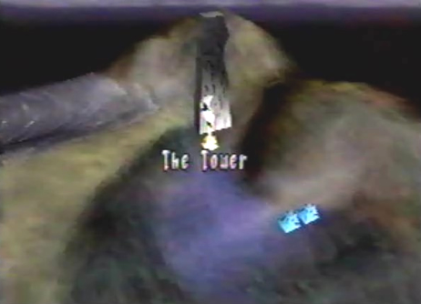 12. A long and perilous journey awaits at the Tower. Are you prepared? You better be! |